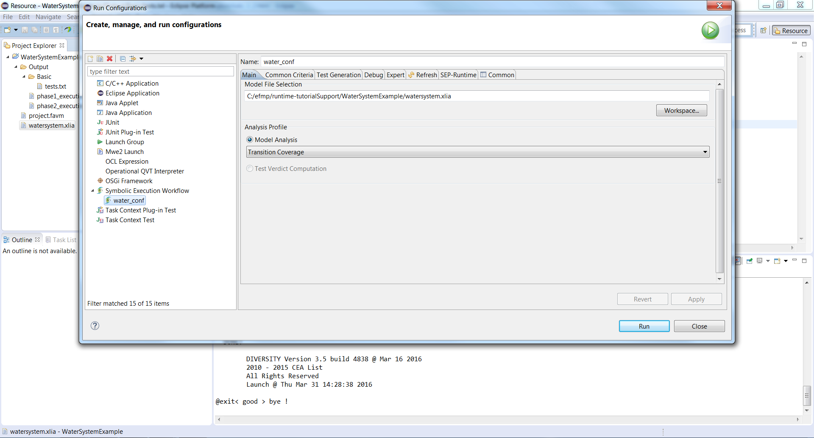
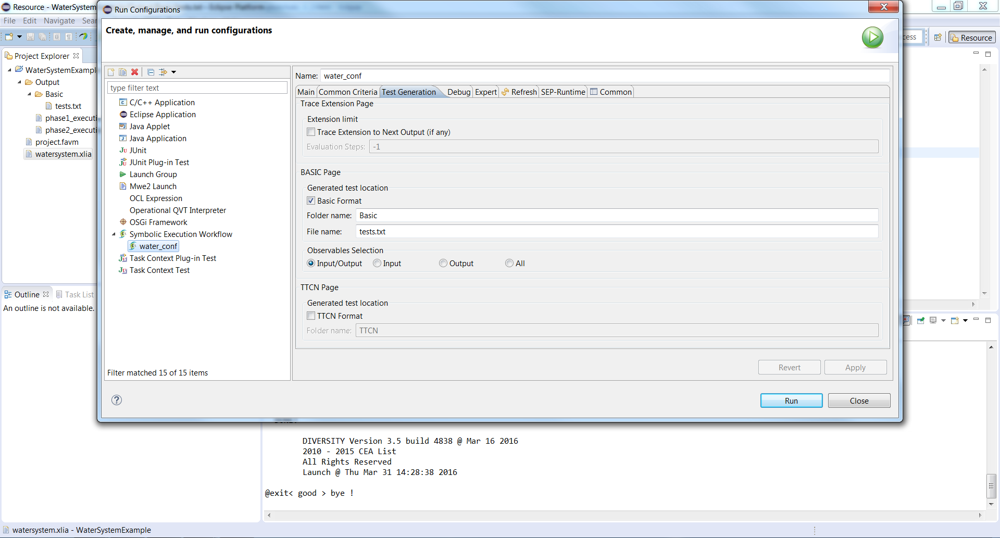
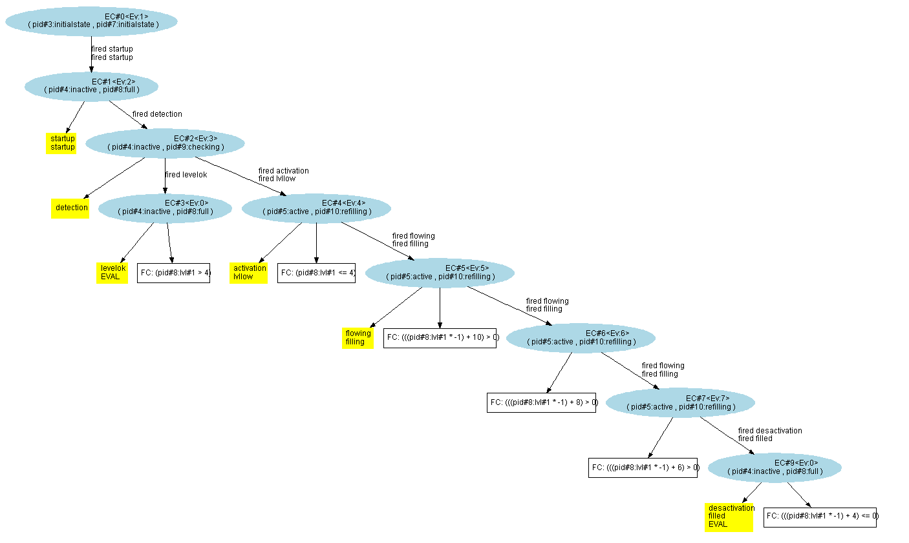
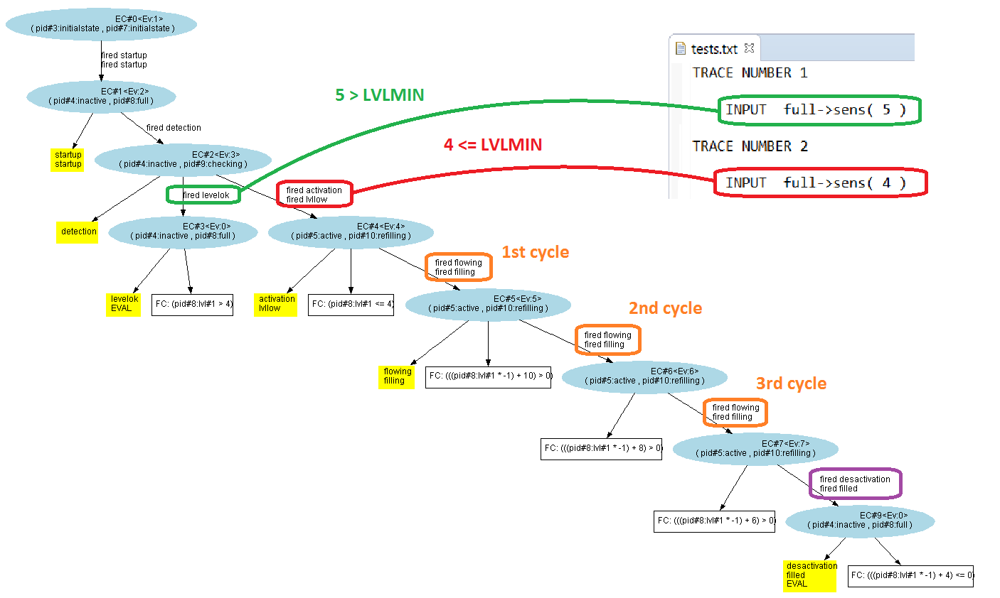

Another feature of the symbolic engine is "Transition Coverage". Its goal is to find a set of paths/traces (as short as possible) in which all the existing transitions are triggered (at least) once.
Combined with the evaluation of numeric values that would allow those paths to be taken, this feature can help the user to produce tests for his/her system.
In what follows, we will apply this feature on our tutorial example.
Firstly, we select "Transition Coverage" in "Run Configurations..." :
We verify that the numerical values will be produced on the "Test Generation" tab :
When running the engine, we obtain a tree that covers all transitions and that is as short as possible :
By comparing the tree, and the text file containing the numeric values, we can deduce the data that is required to go through this tree :
We see that for a level of 4, we need 3 pumping cycles to reach LVLRECO :
On one hand :
lvl + FLOW*T ≤ LVLRECO
4 + 2 *T ≤ 10
Therefore : T ≤ 3
On the other hand :
lvl + FLOW*(T+1) > LVLRECO
4 + 2 *(T+1) > 10
Therefore : T < 2
As T=3 is the lowest number of pumping cycles that can be done (seen previously), we have indeed the shortest tree possible.